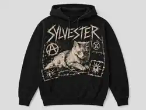

01 / LOCKED
3 APPROVEDINTERNAL VISUAL LIBRARY / ART DIRECTION / APPROVED WORK
DESIGN
LAB.
The permanent Bestie Boys visual-development library. Current Onion approvals, every distinct Gerrard/genre study currently implemented or documented in the repository, saved garment and artwork studies, and the three website directions live here without replacing the customer-facing storefront.
01 / CURRENT APPROVED LIBRARY
ONION BY
SCENE.
All nine current Onion scene sets are collected here, with three approved artworks in each genre. These are the saved review assets currently available in GitHub.
02 / LOCKED
3 APPROVEDGoregrind
03 / LOCKED
3 APPROVEDGrindcore
04 / LOCKED
3 APPROVEDCrust Punk
05 / LOCKED
3 APPROVEDPowerviolence
06 / LOCKED
3 APPROVEDGore Noise
07 / LOCKED
3 APPROVEDRap Bootleg
08 / LOCKED
3 APPROVEDDeath Metal
09 / LOCKED
3 APPROVEDDoom Metal
Current library rule: artwork is shown as saved only when the repository contains the corresponding asset. Unsaved ChatGPT generations are not presented as stored files.
02 / COMPLETE GERRARD + GENRE ARCHIVE
30 STUDIES.
ALL ROUTES.
This is the union of the original concept matrix and the later genre-source pages. It contains 13 saved artwork boards, nine fully implemented HTML/CSS layout studies and eight earlier brief-only concepts. Rendered studies open inside the Design Lab using the real source-page composition rather than a fake thumbnail.
Status is explicit: SAVED ARTWORK means an artwork file exists; RENDERED LAYOUT means the design is implemented in a genre page but does not yet have a dedicated artwork file; BRIEF ONLY means the concept exists only as an archived direction.
03 / OTHER SAVED DEVELOPMENT ASSETS
BOARDS.
MOCKUPS.
These are additional visual-development files already stored in the repository. They are surfaced here so the Design Lab acts as one practical index rather than forcing you to hunt through the storefront or folders.




04 / GENRE SOURCE PAGES
DEEPER
STUDIES.
The dedicated genre pages remain intact as deeper development references. Their distinct design routes are now indexed inside the archive above; these links remain for full-page art-direction context, rules and garment logic.
01 / ARCHIVEBlack MetalOpen genre studies →
02 / ARCHIVEGoregrindOpen genre studies →
03 / ARCHIVEGrindcoreOpen genre studies →
04 / ARCHIVECrust PunkOpen genre studies →
05 / ARCHIVEPowerviolenceOpen genre studies →
06 / ARCHIVEGore NoiseOpen genre studies →
07 / ARCHIVERap BootlegOpen genre studies →
08 / CURRENTDeath MetalOpen current Onion studies →
09 / CURRENTDoom MetalOpen current Onion studies →